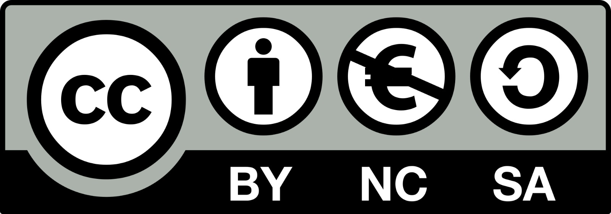

Agradezco el delicado y extraordinario trabajo técnico de microscopía electrónica de Isabelle Fourquaux,
del CMEAB, Faculté de Médecine de Rangueil, Université Paul Sabatier,
en Toulouse, Francia.
✤
Asimismo, reconozco el apoyo brindado en la formación de mi conocimiento como parasitóloga al Doctor J. Felipe de Jesús Torres Acosta, y en especial, al Doctor Hervé Hoste, por haberme beneficiado en la toma y autoría de estas bellas imágenes de microscopía electrónica.
✤
También reconozco la gran labor de MVZ Yessica Cecilia Vázquez y de la maestra MVZ Laura González Reyes, ayudantes de profesor, por la contribución de las fotos de microscopía óptica y los videos integrados en esta obra como parte de las colaboraciones en la
Unidad de Desarrollo de Organismos Parasitarios
de la FMVZ-UNAM.
Primera edición (html), xx de xxxxx de 2025
DR© 2025 UNIVERSIDAD NACIONAL AUTÓNOMA DE MÉXICO
Facultad de Medicina Veterinaria y Zootecnia.
Ciudad Universitaria, Coyoacán, 04510, Ciudad de México.
ISBN: ----------- (HTML)
Esta edición y sus características son propiedad de la Universidad Nacional Autónoma de México.
Prohibida la reproducción parcial o total por cualquier medio, sin autorización escrita del titular de los derechos patrimoniales.
El Comité Editorial de la FMVZ agradece
al Dr. Carlos Gerardo García Tovar, de la Facultad de Estudios Superiores Cuautitlán-UNAM,
por su colaboración como revisor técnico de esta obra.
Hecho en México
Formato: e-book
Peso: 54.4 mb

Diseño y programación:
carlos iván sánchez-sánchez
Retoque digital:
angélica corona gómez
Revisión lingüística y de galeras:
elizabeth sarmiento de la huerta
Gestión legal:
--
Webmaster:
marco antonio domínguez guadarrama